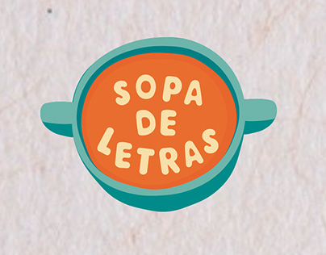

Ingredientes para preparar una buena sopa de letras
- Ingrese palabras con más de tres o cuatro caracteres.
- Evite ingresar palabras que contengan espacios.
- Evite ingresar palabras que contengan tildes, números o caracteres especiales.
- Se recomienda utilizar Google Chrome, Chromium, Mozilla Firefox o Safari.
- Para la dimensión por defecto se recomienda ingresar menos de 15 palabras (Si se ingresan más se generará correctamente, pero el gráfico con la lista de palabras se desbordará).
- Si generas tu sopa de letras en texto y lo copias a un archivo de Microsoft Word u otro, se recomienda usar el tipo de fuente "Consolas".
